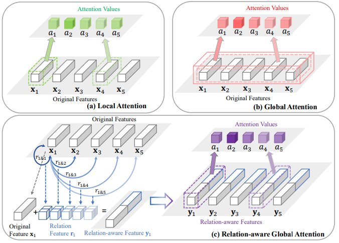
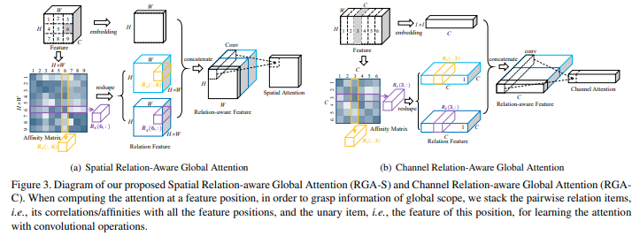
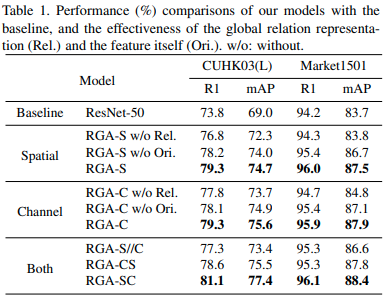
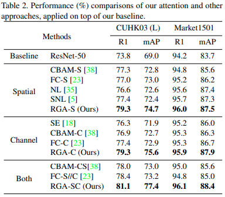
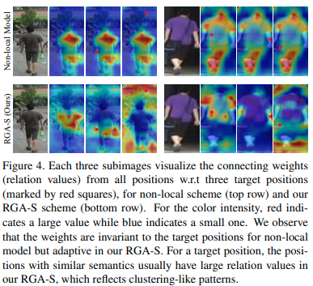
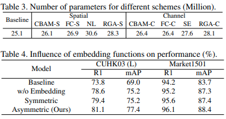
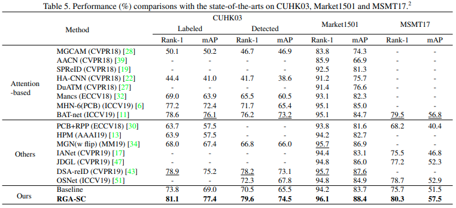
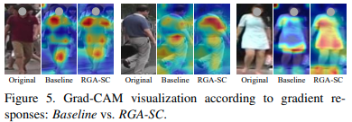

Relation-Aware Global Attention for Person Re-identification

arxivへのリンク
paper
掲載した画像は全て原著論文からの引用
どんなもの？
Attention機構は特徴ベクトルの重要度を決めるとき，Targetの特徴のみで重要度を計算するLocal-Attentionと，全ての特徴を用いてTargetの重要度を計算するGlobal-Attention(Non-local Attention)に大別できる．
前者は受容野に制限があるため特徴マップの大局的な情報(i.e. 腕"全体”)を考慮できず，後者は大局的な情報を考慮できるが位置情報が欠落するため，物体構造の関係性(i.e. Tシャツと靴の組み合わせ)を考慮できない.
そこで，重要度を決めるTargetの特徴ベクトルと，その他の特徴ベクトルの関係性を計算するRelation-aware Global Attention(RGA)を提案．Person Re-IDと相性がよく3つのデータ・セットにおいてSoTA．
先行研究と比べてどこがすごい？
7x7の大きなカーネルを用いるAttention機構であるCBAMでも捉えることができない構造関係(i.e. 右手：ペットボトル，左手：手ぶら)を踏まえて特徴抽出が可能． また，Global Attentionは特徴マップ間でAttentionに差が生まれにくいが，RGAの特徴マップは多様になる．
技術や手法のキモはどこ？
 特徴間の関係性を捉えるために，重要度を決めるTargetとなる特徴とその他の特徴のペアを変えてRelation特徴を算出する．その後Targetの特徴とRelation特徴の結合し，Targetの重要度を重み付けする.

Spatial AttentionであるRGA-S，Channel AttentionであるRGA-Cを提案．
RGA-SはCxHxWの特徴マップのうち，チャンネル方向の特徴をひとまとめとして扱い，N=0…(HxW)までのindexとする．基準となるi番目の要素(1x1xC)とj番目の要素(1x1xC)をそれぞれ，1x1 Conv(θ，Φ)で変換(1x1x{C/r})して内積を計算する．
この処理を全てのi,jの組み合わせで行いNxNのAffinity matrixをつくる．
参考：Affinity_matrix
生成したAffinity matrixを行，列毎に分解しHxWのRelation特徴とする．
Relation特徴と変換前の特徴はドメインが異なる情報をもつため，Global Average Poolingと1x1 Convで変換し次元削減する．その後にそれらを結合し，1x1 Conv(W1,W1)によってAttntionを生成する．
同様にRGA-Cも計算できる．
どうやって有効だと検証した？

RGA-S，RGA-CをResNet50のResidual Blockの後に挿入し効果を検証．
RGA-SとRGA-Cのどちらも使う場合は順番に適用(RGA-CS, RGA-SC)，並列に処理(RGA-S//C)を検証．

Local,Global Attentionと比較．構造の関係を考慮したRGAが凌駕．
 Global Attention(Non-local)はTarget(赤点)の位置が変わっても強く重みづけされる領域が変化しないが，RGA-Sは服，持ち物など関係のある領域に強く重みづけされる．

Local Attentionと比較すると保持するパラメータ数は増えるが，Global Attentionよりは少なくていい．
Affinity matrixを生成するとき1x1 Convでembeddingする効果があるか検証．
別々の重みをもつ2つの1x1 Convを利用したほうがよい(Asymmetric)
(誤解釈があるかもしれない)
 SoTAと比較．2019年に提案された手法を大きく凌駕．
 Grad-CAMにより認識に寄与した領域を可視化すると，人の直感に沿った領域に強く反応していることがわかる．
議論はある？
ResNetの場合，各ブロックにRGA-SCに挿入したほうがよい．
次に読むべき論文は？
Yue Cao, Jiarui Xu, Stephen Lin, Fangyun Wei, and Han Hu. Gcnet: Non-local networks meet squeeze-excitation networks and beyond. arXiv preprint arXiv:1904.11492, 2019.
Naoki Setoguchi
Machine Learning Engineer and Reseacher
My research interests include Computer vision, macine learning.